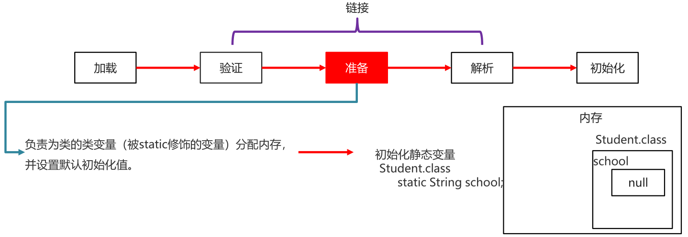
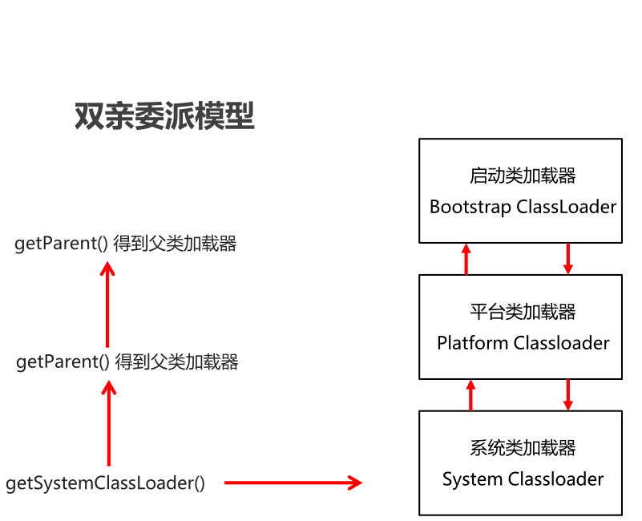

类加载器
类加载器：负责将.class文件（存储的物理文件）加载在到内存中

类加载的过程
类加载时机
- 创建类的实例（对象）
- 调用类的类方法
- 访问类或者接口的类变量，或者为该类变量赋值
- 使用反射方式来强制创建某个类或接口对应的java.lang.Class对象
- 初始化某个类的子类
- 直接使用java.exe命令来运行某个主类
类加载过程
加载
- 通过包名 + 类名，获取这个类，准备用流进行传输
- 在这个类加载到内存中
- 加载完毕创建一个class对象

链接
验证
确保Class文件字节流中包含的信息符合当前虚拟机的要求，并且不会危害虚拟机自身安全
(文件中的信息是否符合虚拟机规范有没有安全隐患)

准备
负责为类的类变量（被static修饰的变量）分配内存，并设置默认初始化值
解析
将类的二进制数据流中的符号引用替换为直接引用
(本类中如果用到了其他类，此时就需要找到对应的类)

初始化
根据程序员通过程序制定的主观计划去初始化类变量和其他资源
(静态变量赋值以及初始化其他资源)
小结
- 当一个类被使用的时候，才会加载到内存
- 类加载的过程: 加载、验证、准备、解析、初始化
类加载的分类
分类
- Bootstrap class loader：虚拟机的内置类加载器，通常表示为null ，并且没有父null，C++写的
- Platform class loader：平台类加载器,负责加载JDK中一些特殊的模块
- System class loader：系统类加载器,负责加载用户类路径上所指定的类库
类加载器的继承关系
- System的父加载器为Platform
- Platform的父加载器为Bootstrap
代码演示
public class ClassLoaderDemo1 { public static void main(String[] args) { //获取系统类加载器 ClassLoader systemClassLoader = ClassLoader.getSystemClassLoader(); //获取系统类加载器的父加载器 --- 平台类加载器 ClassLoader classLoader1 = systemClassLoader.getParent(); //获取平台类加载器的父加载器 --- 启动类加载器 ClassLoader classLoader2 = classLoader1.getParent(); System.out.println("系统类加载器" + systemClassLoader); System.out.println("平台类加载器" + classLoader1); System.out.println("启动类加载器" + classLoader2); } }
双亲委派模型
如果一个类加载器收到了类加载请求，它并不会自己先去加载，而是把这个请求委托给父类的加载器去执行，如果父类加载器还存在其父类加载器，则进一步向上委托，依次递归，请求最终将到达顶层的启动类加载器，如果父类加载器可以完成类加载任务，就成功返回，倘若父类加载器无法完成此加载任务，子加载器才会尝试自己去加载，这就是双亲委派模式
ClassLoader 中的两个方法
| 方法名 | 说明 |
|---|---|
| public static ClassLoader getSystemClassLoader() | 获取系统类加载器 |
| public InputStream getResourceAsStream(String name) | 加载某一个资源文件 |
示例代码
public class ClassLoaderDemo2 { public static void main(String[] args) throws IOException { //static ClassLoader getSystemClassLoader() 获取系统类加载器 //InputStream getResourceAsStream(String name) 加载某一个资源文件 //获取系统类加载器 ClassLoader systemClassLoader = ClassLoader.getSystemClassLoader(); //利用加载器去加载一个指定的文件 //参数：文件的路径（放在src的根目录下，默认去那里加载） //返回值：字节流。 InputStream is = systemClassLoader.getResourceAsStream("prop.properties"); Properties prop = new Properties(); prop.load(is); System.out.println(prop); is.close(); } }
反射
反射机制
是在运行状态中，对于任意一个类，都能够知道这个类的所有属性和方法；
对于任意一个对象，都能够调用它的任意属性和方法；
这种动态获取信息以及动态调用对象方法的功能称为Java语言的反射机制。
获取Class类对象的三种方式
三种方式分类
类名.class属性
对象名.getClass()方法
Class.forName(全类名)方法
示例代码
public class Student {
private String name;
private int age;
public Student() {
}
public Student(String name, int age) {
this.name = name;
this.age = age;
}
public String getName() {
return name;
}
public void setName(String name) {
this.name = name;
}
public int getAge() {
return age;
}
public void setAge(int age) {
this.age = age;
}
public void study(){
System.out.println("学生在学习");
}
@Override
public String toString() {
return "Student{" +
"name='" + name + '\'' +
", age=" + age +
'}';
}
}
//测试代码
public class ReflectDemo1 {
public static void main(String[] args) throws ClassNotFoundException {
//1.Class类中的静态方法forName("全类名")
//全类名:包名 + 类名
Class clazz = Class.forName("com.yang.myreflect2.Student");
System.out.println(clazz);
//2.通过class属性来获取
Class clazz2 = Student.class;
System.out.println(clazz2);
//3.利用对象的getClass方法来获取class对象
//getClass方法是定义在Object类中.
Student s = new Student();
Class clazz3 = s.getClass();
System.out.println(clazz3);
System.out.println(clazz == clazz2);
System.out.println(clazz2 == clazz3);
}
}反射获取构造方法并使用
Class类获取构造方法对象的方法
方法介绍
方法名 说明 Constructor<?>[] getConstructors() 返回所有公共构造方法对象的数组 Constructor<?>[] getDeclaredConstructors() 返回所有构造方法对象的数组 Constructor getConstructor(Class<?>… parameterTypes) 返回单个公共构造方法对象 Constructor getDeclaredConstructor(Class<?>… parameterTypes) 返回单个构造方法对象 示例代码
public class Student { private String name; private int age; //私有的有参构造方法 private Student(String name) { System.out.println("name的值为:" + name); System.out.println("private...Student...有参构造方法"); } //公共的无参构造方法 public Student() { System.out.println("public...Student...无参构造方法"); } //公共的有参构造方法 public Student(String name, int age) { System.out.println("name的值为:" + name + "age的值为:" + age); System.out.println("public...Student...有参构造方法"); } } //测试类 public class ReflectDemo1 { public static void main(String[] args) throws ClassNotFoundException, NoSuchMethodException { method1(); method2(); method3(); method4(); } private static void method4() throws ClassNotFoundException, NoSuchMethodException { // 返回单个构造方法对象 //1.获取Class对象 Class clazz = Class.forName("com.yang.myreflect3.Student"); Constructor constructor = clazz.getDeclaredConstructor(String.class); System.out.println(constructor); } private static void method3() throws ClassNotFoundException, NoSuchMethodException { //1.获取Class对象 Class clazz = Class.forName("com.yang.myreflect3.Student"); //小括号中,一定要跟构造方法的形参保持一致. Constructor constructor1 = clazz.getConstructor(); System.out.println(constructor1); Constructor constructor2 = clazz.getConstructor(String.class, int.class); System.out.println(constructor2); //因为Student类中,没有只有一个int的构造,所以这里会报错. Constructor constructor3 = clazz.getConstructor(int.class); System.out.println(constructor3); } private static void method2() throws ClassNotFoundException { //1.获取Class对象 Class clazz = Class.forName("com.yang.myreflect3.Student"); Constructor[] constructors = clazz.getDeclaredConstructors(); for (Constructor constructor : constructors) { System.out.println(constructor); } } private static void method1() throws ClassNotFoundException { //1.获取Class对象 Class clazz = Class.forName("com.yang.myreflect3.Student"); Constructor[] constructors = clazz.getConstructors(); for (Constructor constructor : constructors) { System.out.println(constructor); } } }
Constructor类用于创建对象的方法
方法介绍
方法名 说明 T newInstance(Object…initargs) 根据指定的构造方法创建对象 setAccessible(boolean flag) 设置为true,表示取消访问检查 示例代码
// Student类同上一个示例,这里就不在重复提供了 public class ReflectDemo2 { public static void main(String[] args) throws ClassNotFoundException, NoSuchMethodException, IllegalAccessException, InvocationTargetException, InstantiationException { //method1(); //method2(); //method3(); //method4(); } private static void method4() throws ClassNotFoundException, NoSuchMethodException, InstantiationException, IllegalAccessException, InvocationTargetException { //获取一个私有的构造方法并创建对象 //1.获取class对象 Class clazz = Class.forName("com.yang.myreflect3.Student"); //2.获取一个私有化的构造方法. Constructor constructor = clazz.getDeclaredConstructor(String.class); //被private修饰的成员,不能直接使用的 //如果用反射强行获取并使用,需要临时取消访问检查 constructor.setAccessible(true); //3.直接创建对象 Student student = (Student) constructor.newInstance("zhangsan"); System.out.println(student); } private static void method3() throws ClassNotFoundException, InstantiationException, IllegalAccessException { //简写格式 //1.获取class对象 Class clazz = Class.forName("com.yang.myreflect3.Student"); //2.在Class类中,有一个newInstance方法,可以利用空参直接创建一个对象 Student student = (Student) clazz.newInstance();//这个方法现在已经过时了,了解一下 System.out.println(student); } private static void method2() throws ClassNotFoundException, NoSuchMethodException, InstantiationException, IllegalAccessException, InvocationTargetException { //1.获取class对象 Class clazz = Class.forName("com.yang.myreflect3.Student"); //2.获取构造方法对象 Constructor constructor = clazz.getConstructor(); //3.利用空参来创建Student的对象 Student student = (Student) constructor.newInstance(); System.out.println(student); } private static void method1() throws ClassNotFoundException, NoSuchMethodException, InstantiationException, IllegalAccessException, InvocationTargetException { //1.获取class对象 Class clazz = Class.forName("com.yang.myreflect3.Student"); //2.获取构造方法对象 Constructor constructor = clazz.getConstructor(String.class, int.class); //3.利用newInstance创建Student的对象 Student student = (Student) constructor.newInstance("zhangsan", 23); System.out.println(student); } }
反射获取成员变量并使用
方法分类
方法名 说明 Field[] getFields() 返回所有公共成员变量对象的数组 Field[] getDeclaredFields() 返回所有成员变量对象的数组 Field getField(String name) 返回单个公共成员变量对象 Field getDeclaredField(String name) 返回单个成员变量对象 示例代码
public class Student { public String name; public int age; public String gender; private int money = 300; @Override public String toString() { return "Student{" + "name='" + name + '\'' + ", age=" + age + ", gender='" + gender + '\'' + ", money=" + money + '}'; } } public class ReflectDemo1 { public static void main(String[] args) throws ClassNotFoundException, NoSuchFieldException { method1(); method2(); method3(); method4(); } private static void method4() throws ClassNotFoundException, NoSuchFieldException { //1.获取class对象 Class clazz = Class.forName("com.yang.myreflect4.Student"); //2.获取money成员变量 Field field = clazz.getDeclaredField("money"); //3.打印一下 System.out.println(field); } private static void method3() throws ClassNotFoundException, NoSuchFieldException { //想要获取的成员变量必须是真实存在的 //且必须是public修饰的. //1.获取class对象 Class clazz = Class.forName("com.yang.myreflect4.Student"); //2.获取name这个成员变量 //Field field = clazz.getField("name"); //Field field = clazz.getField("name1"); Field field = clazz.getField("money"); //3.打印一下 System.out.println(field); } private static void method2() throws ClassNotFoundException { //1.获取class对象 Class clazz = Class.forName("com.yang.myreflect4.Student"); //2.获取所有的Field对象 Field[] fields = clazz.getDeclaredFields(); //3.遍历 for (Field field : fields) { System.out.println(field); } } private static void method1() throws ClassNotFoundException { //1.获取class对象 Class clazz = Class.forName("com.yang.myreflect4.Student"); //2.获取Field对象. Field[] fields = clazz.getFields(); //3.遍历 for (Field field : fields) { System.out.println(field); } } }
Field类用于给成员变量赋值的方法
方法介绍
方法名 说明 void set(Object obj, Object value) 赋值 Object get(Object obj) 获取值 示例代码
public class ReflectDemo2 { public static void main(String[] args) throws ClassNotFoundException, NoSuchFieldException, IllegalAccessException, InstantiationException { method1(); method2(); } private static void method2() throws ClassNotFoundException, NoSuchFieldException, InstantiationException, IllegalAccessException { //1.获取class对象 Class clazz = Class.forName("com.yang.myreflect4.Student"); //2.获取成员变量Field的对象 Field field = clazz.getDeclaredField("money"); //3.取消一下访问检查 field.setAccessible(true); //4.调用get方法来获取值 //4.1创建一个对象 Student student = (Student) clazz.newInstance(); //4.2获取指定对象的money的值 Object o = field.get(student); //5.打印一下 System.out.println(o); } private static void method1() throws ClassNotFoundException, NoSuchFieldException, InstantiationException, IllegalAccessException { //1.获取class对象 Class clazz = Class.forName("com.yang.myreflect4.Student"); //2.获取name这个Field对象 Field field = clazz.getField("name"); //3.利用set方法进行赋值. //3.1先创建一个Student对象 Student student = (Student) clazz.newInstance(); //3.2有了对象才可以给指定对象进行赋值 field.set(student,"zhangsan"); System.out.println(student); } }
反射获取成员方法并使用
Class类获取成员方法对象的方法
方法分类
方法名 说明 Method[] getMethods() 返回所有公共成员方法对象的数组，包括继承的 Method[] getDeclaredMethods() 返回所有成员方法对象的数组，不包括继承的 Method getMethod(String name, Class<?>… parameterTypes) 返回单个公共成员方法对象 Method getDeclaredMethod(String name, Class<?>… parameterTypes) 返回单个成员方法对象 示例代码
public class Student { //私有的，无参无返回值 private void show() { System.out.println("私有的show方法，无参无返回值"); } //公共的，无参无返回值 public void function1() { System.out.println("function1方法，无参无返回值"); } //公共的，有参无返回值 public void function2(String name) { System.out.println("function2方法，有参无返回值,参数为" + name); } //公共的，无参有返回值 public String function3() { System.out.println("function3方法，无参有返回值"); return "aaa"; } //公共的，有参有返回值 public String function4(String name) { System.out.println("function4方法，有参有返回值,参数为" + name); return "aaa"; } } //测试类 public class ReflectDemo1 { public static void main(String[] args) throws ClassNotFoundException, NoSuchMethodException { method1(); method2(); method3(); method4(); method5(); } private static void method5() throws ClassNotFoundException, NoSuchMethodException { //1.获取class对象 Class clazz = Class.forName("com.yang.myreflect5.Student"); //2.获取一个成员方法show Method method = clazz.getDeclaredMethod("show"); //3.打印一下 System.out.println(method); } private static void method4() throws ClassNotFoundException, NoSuchMethodException { //1.获取class对象 Class clazz = Class.forName("com.yang.myreflect5.Student"); //2.获取一个有形参的方法function2 Method method = clazz.getMethod("function2", String.class); //3.打印一下 System.out.println(method); } private static void method3() throws ClassNotFoundException, NoSuchMethodException { //1.获取class对象 Class clazz = Class.forName("com.yang.myreflect5.Student"); //2.获取成员方法function1 Method method1 = clazz.getMethod("function1"); //3.打印一下 System.out.println(method1); } private static void method2() throws ClassNotFoundException { //1.获取class对象 Class clazz = Class.forName("com.yang.myreflect5.Student"); //2.获取Method对象 Method[] methods = clazz.getDeclaredMethods(); //3.遍历一下数组 for (Method method : methods) { System.out.println(method); } } private static void method1() throws ClassNotFoundException { //1.获取class对象 Class clazz = Class.forName("com.yang.myreflect5.Student"); //2.获取成员方法对象 Method[] methods = clazz.getMethods(); //3.遍历 for (Method method : methods) { System.out.println(method); } } }
Method类用于执行方法的方法
方法介绍
方法名 说明 Object invoke(Object obj, Object… args) 运行方法 参数一: 用obj对象调用该方法
参数二: 调用方法的传递的参数(如果没有就不写)
返回值: 方法的返回值(如果没有就不写)
示例代码
public class ReflectDemo2 { public static void main(String[] args) throws ClassNotFoundException, NoSuchMethodException, IllegalAccessException, InstantiationException, InvocationTargetException { //1.获取class对象 Class clazz = Class.forName("com.yang.myreflect5.Student"); //2.获取里面的Method对象 function4 Method method = clazz.getMethod("function4", String.class); //3.运行function4方法就可以了 //3.1创建一个Student对象,当做方法的调用者 Student student = (Student) clazz.newInstance(); //3.2运行方法 Object result = method.invoke(student, "zhangsan"); //4.打印一下返回值 System.out.println(result); } }